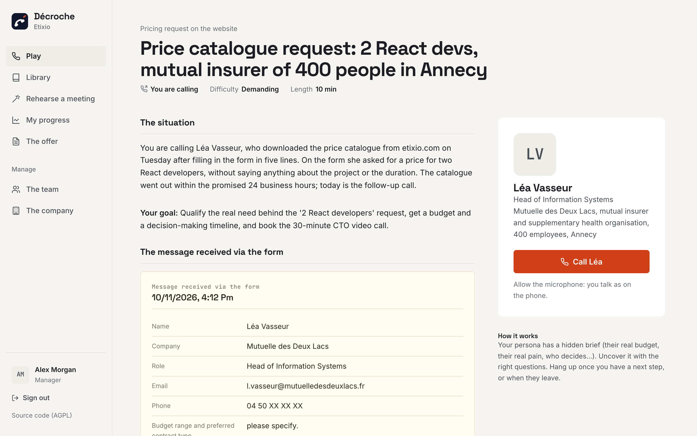
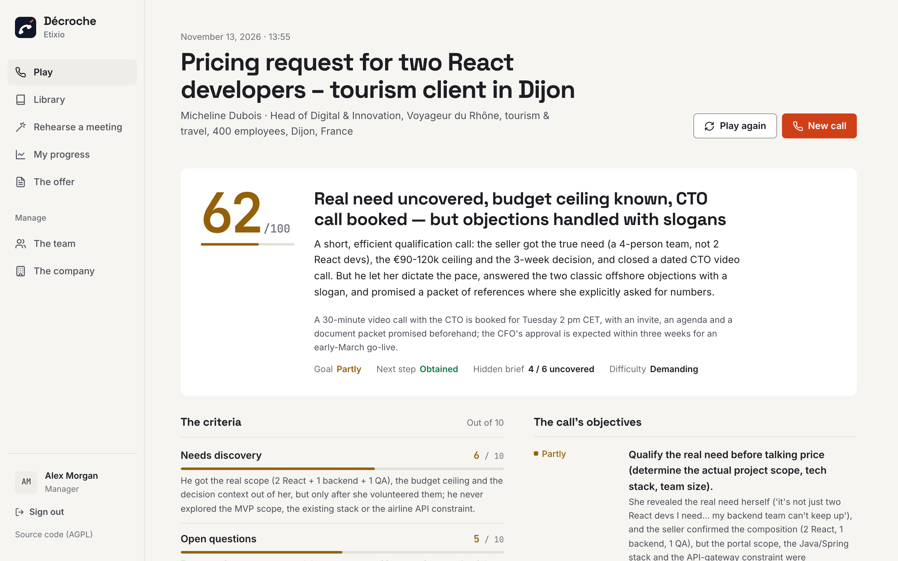
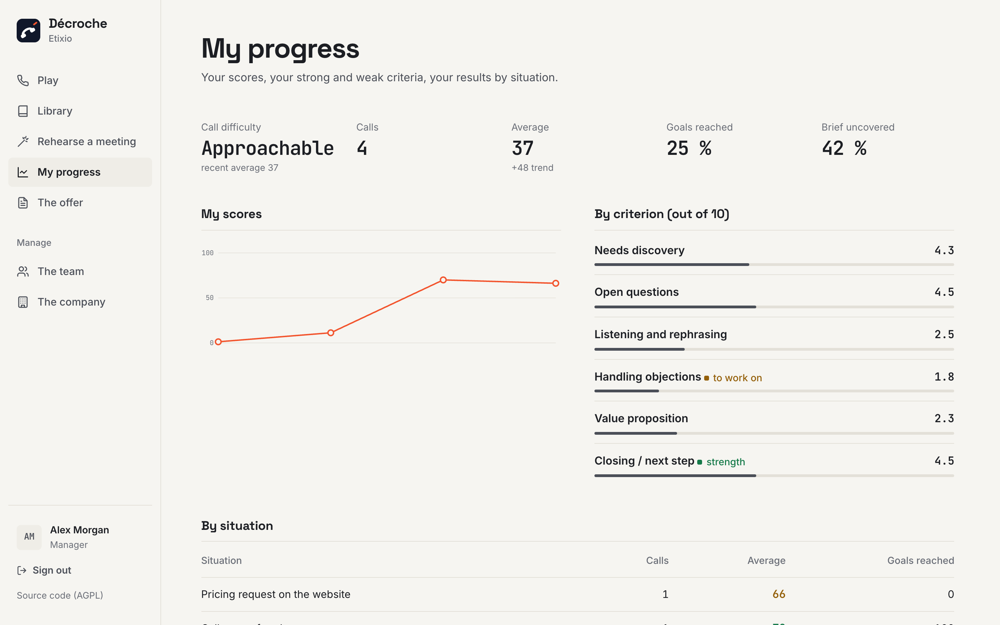
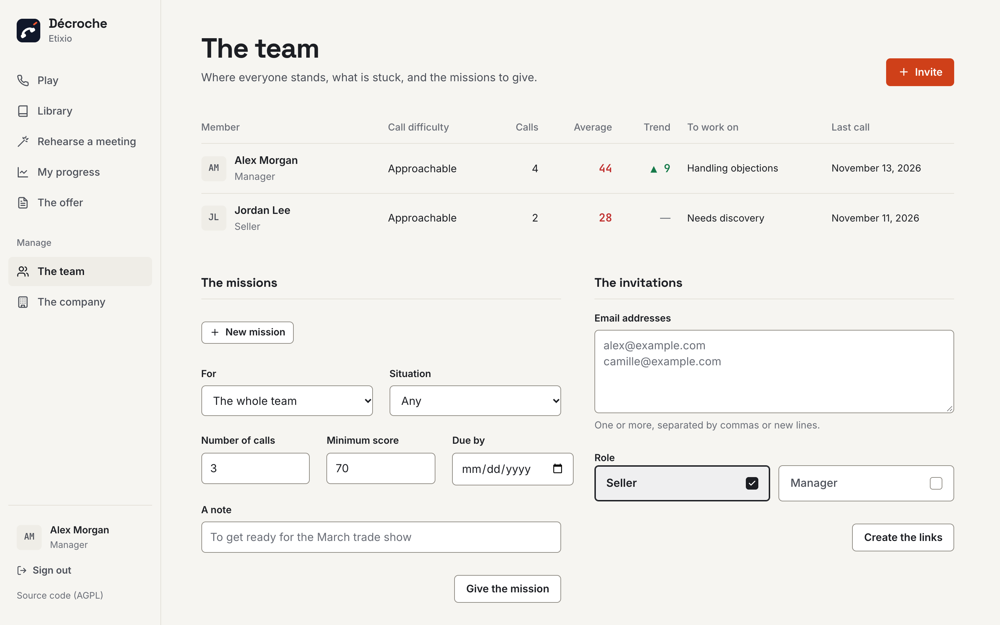

Open source · Symfony AI · MCPOpen source · Symfony AI · MCP
Fumble your calls here, not in front of clients.Ratez vos appels ici, pas devant vos clients.
Décroche puts your sellers on the phone with an AI client who plays your real prospects: they pick up, push back, hide their budget. Talk out loud, then a coach grades what you said, quote by quote. Décroche met vos commerciaux au téléphone face à un client IA qui joue vos vrais prospects : il décroche, il objecte, il cache son budget. Vous parlez à voix haute, puis un coach note ce que vous avez dit, citation par citation.
Décroche in 90 seconds, below. Self-hosted in five minutes with Docker. English and French.Décroche en 90 secondes, ci-dessous. Installé en cinq minutes avec Docker. En français et en anglais.
How it worksComment ça marche
A real call, then the truth about it.Un vrai appel, puis la vérité dessus.
No multiple choice, no role-play with a colleague who goes easy on you. A person you have never met, a phone, and a few minutes.Pas de QCM, pas de jeu de rôle avec un collègue qui vous ménage. Quelqu’un que vous ne connaissez pas, un téléphone, et quelques minutes.
A call drawn from your own businessUn appel tiré de votre métier
At setup, Décroche reads your website and writes your offer sheet and a catalogue of situations: a price request, a furious client, a referral, a switchboard that blocks you.À l’installation, Décroche lit votre site et rédige votre fiche d’offre et un catalogue de situations : une demande de tarifs, un client furieux, une recommandation, un standard qui fait barrage.
Each new call draws one and writes it fresh: a person, a company, the document in front of you, three objectives. And a hidden brief you will have to uncover.Chaque nouvel appel en tire une et l’écrit sur mesure : une personne, une entreprise, le document sous vos yeux, trois objectifs. Et un brief caché qu’il faudra découvrir.

You talk. They answer, out loud.Vous parlez. Il répond, à voix haute.
Speech recognition in the browser, an open voice in return (Kyutai’s Pocket TTS, on your server), sentence by sentence as it is written. Cut them off, they stop. Ask the right question, they let the budget slip. Pitch too early, they hang up.Reconnaissance vocale dans le navigateur, une voix ouverte en retour (Pocket TTS de Kyutai, sur votre serveur), phrase par phrase dès qu’elle est écrite. Coupez-le, il s’arrête. Posez la bonne question, il lâche son budget. Pitchez trop tôt, il raccroche.
The client is an agent with their own files: their tickets, their stock, their suppliers, whatever their business holds. Ask about an incident and they say "let me check…" and quote their records. Propose a meeting and they open their calendar, then book it if they are free.Le client est un agent qui a ses propres dossiers : ses tickets, ses stocks, ses fournisseurs, selon son métier. Parlez d’un incident, il répond « je regarde… » et cite ses fiches. Proposez un rendez-vous, il ouvre son agenda, puis le réserve s’il est libre.
- 00:02 AI“Antoine Roussel, hello? I’ve got ten minutes.”« Antoine Roussel, allô ? J’ai dix minutes. »
- 00:06 YouVous“Then let’s use them well. What made you ask for our rates?”« Alors utilisons-les bien. Qu’est-ce qui vous a fait demander nos tarifs ? »
- 00:11 AI“Our last provider delivered four months late.”« Notre dernier prestataire a livré avec quatre mois de retard. »
- briefReal pain uncoveredVraie douleur découverte
- coach78/100 · good open question, now lock in the next stepbonne question ouverte, verrouillez la suite
A debrief that teachesUn débrief qui fait progresser
A score out of 100 on your own scorecard, each objective judged, the hidden brief revealed with what you missed and the question that would have found it. Your best and worst lines, quoted word for word, with what to say instead.Une note sur 100 selon votre grille, chaque objectif jugé, le brief caché révélé avec ce que vous avez manqué et la question qui l’aurait trouvé. Vos meilleures et pires répliques, citées mot pour mot, avec quoi dire à la place.
Then one click: replay the call from any line, or train on your weakest point with a call built to test it.Puis un clic : rejouez l’appel depuis n’importe quelle réplique, ou entraînez-vous sur votre point faible avec un appel construit pour le tester.

In Claude, through MCPDans Claude, via MCP
Rehearse tomorrow’s meeting, from its e-mail thread.Répétez le rendez-vous de demain, à partir de ses e-mails.
Connect Décroche to Claude next to your mailbox and calendar. Claude gathers what you know about the client, Décroche turns it into a call with that client, and you take it out loud.Branchez Décroche à Claude, à côté de votre messagerie et de votre agenda. Claude rassemble ce que vous savez du client, Décroche en fait un appel avec ce client, et vous le passez à voix haute.
Take the callPrendre l’appel
Ready-made requestsRequêtes toutes prêtes
rehearse_meetingGathers what your e-mails and calendar say about a meeting, shows you the prospect sheet, then writes the rehearsal.Rassemble ce que vos e-mails et votre agenda disent d’un rendez-vous, vous montre la fiche prospect, puis écrit la répétition.
review_my_callsNames the skill that holds you back, with your own quotes, and offers a call that trains it.Nomme la compétence qui vous freine, avec vos propres citations, et propose un appel pour la travailler.
coach_my_teamFor managers: who progresses, who is stuck and on what, and the missions to give.Pour les managers : qui progresse, qui bloque et sur quoi, et les missions à donner.
The graded debrief opens right in the conversation, as an MCP App. The client’s hidden brief never leaves the server: Claude cannot whisper you the answers.Le débrief noté s’ouvre directement dans la conversation, en MCP App. Le brief caché du client ne quitte jamais le serveur : Claude ne peut pas vous souffler les réponses.
Progress and managersProgression et managers
Progress you can see, a team you can coach.Une progression visible, une équipe qu’on peut coacher.
No points or badges. The people you call get tougher as your scores rise, and the home page tells you the one thing to work on.Ni points ni badges. Vos interlocuteurs se durcissent à mesure que vos notes montent, et l’accueil vous dit la seule chose à travailler.

For each sellerPour chaque commercial
Scores over time, the average of each criterion, results by situation, and the missions their manager gave them.Les notes dans le temps, la moyenne de chaque critère, les résultats par situation, et les missions données par le manager.

For the managerPour le manager
Who progresses and who is stuck, on what. Give a mission (“three price requests scored 70+ by Friday”), invite the team, write your own scenarios and scorecard.Qui progresse, qui bloque, et sur quoi. Donnez une mission (« trois demandes de tarifs à 70+ d’ici vendredi »), invitez l’équipe, écrivez vos propres scénarios et votre grille.
Run itL’installer
Your own instance in two minutes.Votre instance en deux minutes.
- Create a free Hugging Face token with the “Inference Providers” permission, or bring the key of any OpenAI-compatible API (OpenAI, DeepSeek, Mistral, your own Ollama).Créez un jeton Hugging Face gratuit avec la permission « Inference Providers », ou prenez la clé de n’importe quelle API compatible OpenAI (OpenAI, DeepSeek, Mistral, votre propre Ollama).
- Start the container. The onboarding reads your website and writes your calls; with the demo, an example company and its team are already there.Lancez le conteneur. L’onboarding lit votre site et écrit vos appels ; avec la démo, une entreprise d’exemple et son équipe sont déjà là.
- Open the page, sign in, take your first call.Ouvrez la page, connectez-vous, passez votre premier appel.
# the code
git clone https://github.com/mbetixio/decroche.git
cd decroche
# your model's key (Hugging Face, or any OpenAI-compatible API)
echo "AI_API_KEY=hf_your_token" > .env.docker
# optional: the example company instead of the onboarding
echo "DECROCHE_DEMO=1" >> .env.docker
# start, then open http://localhost:7077
docker compose --env-file .env.docker up -d --build
docker compose logs decroche | grep -A1 ManagerUnder the hoodSous le capot
Built on Symfony, open to read.Construit sur Symfony, ouvert à la lecture.
Made by Mathieu Bernard, CTO and AI expert at Etixio, a software services company whose sellers needed somewhere to practise before the real call.Créé par Mathieu Bernard, CTO et expert IA chez Etixio, une société de services logiciels dont les commerciaux avaient besoin d’un endroit où s’entraîner avant le vrai appel.
Symfony 8.1
PHP 8.5, Doctrine, AssetMapper and Stimulus, Twig components. 420+ tests at 100 % coverage, PHPStan at its strictest level.PHP 8.5, Doctrine, AssetMapper et Stimulus, composants Twig. Plus de 420 tests couvrant 100 % du code, PHPStan au niveau le plus strict.
Symfony AI
Three agents with their tools: the client (files, calendar, memory), the coach (earlier debriefs, exact quotes, the offer) and the writer. Streamed replies, structured output into PHP classes.Trois agents et leurs outils : le client (dossiers, agenda, mémoire), le coach (débriefs passés, citations exactes, l’offre) et le rédacteur. Réponses en flux, sortie structurée dans des classes PHP.
MCP
Tools, prompts, resources and an MCP App, as plain Symfony services. Each member connects with a personal key.Outils, prompts, ressources et une MCP App, en simples services Symfony. Chaque membre se connecte avec sa clé personnelle.
Hugging Face
Inference Providers by default: DeepSeek V4.1 Flash for the client and the coach, gpt-oss-120b for the writer. Any OpenAI-compatible API works, one model per agent.Inference Providers par défaut : DeepSeek V4.1 Flash pour le client et le coach, gpt-oss-120b pour le rédacteur. Toute API compatible OpenAI fonctionne, un modèle par agent.
Your dataVos données
One instance per company, on your own server: calls, debriefs and voices are stored there. Only the model provider you choose sees the lines, to answer them: the voices are synthesized on your server, offline.Une instance par entreprise, sur votre serveur : les appels, les débriefs et les voix y sont stockés. Seul le fournisseur de modèle choisi voit les répliques, pour y répondre : les voix sont synthétisées sur votre serveur, hors ligne.
AGPL-3.0
Free and open source. Modify it, host it; share your changes with your users.Libre et open source. Modifiez-le, hébergez-le ; partagez vos changements avec vos utilisateurs.